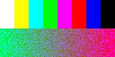
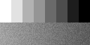

KV260 FPGA IMAGE PROCESSING / MILESTONE 1
Independent NumPy reference versus the compiled portable C++ frame model. Synthetic deterministic input, seed 51. No FPGA execution, HLS synthesis or hardware FPS is represented.


| pixels | 8192 |
|---|---|
| different_pixels | 0 |
| max_absolute_error | 0 |
| mse | 0.0 |
| psnr_db | None |
| psnr_infinite | True |
| exact_match | True |
PSNR is infinite for an exact match; JSON uses null plus psnr_infinite=true instead of non-standard Infinity. Hardware and synthesis results are unavailable.